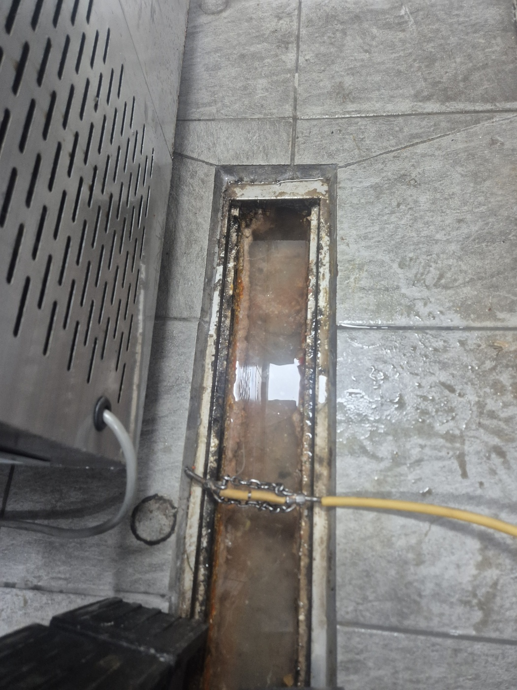
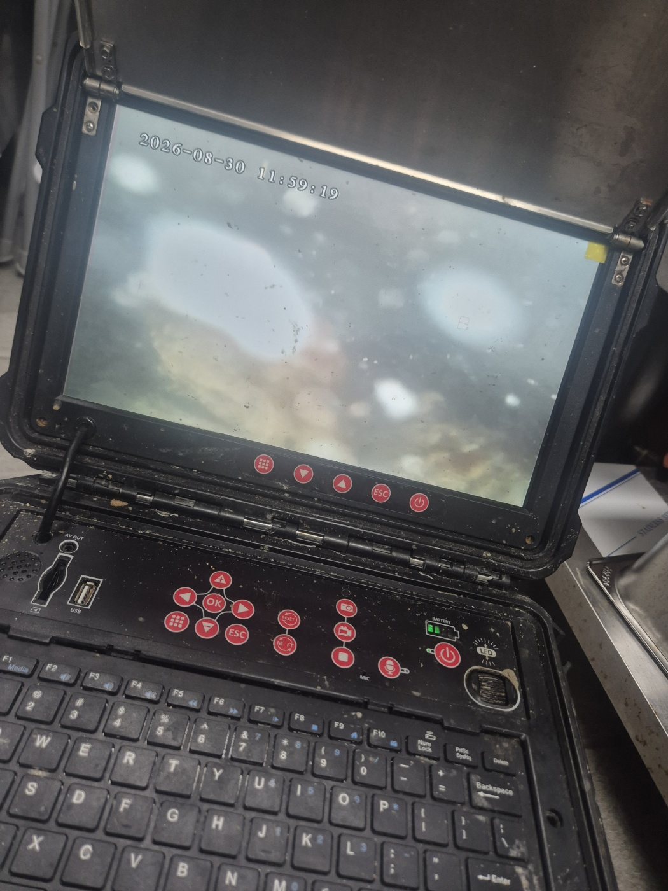
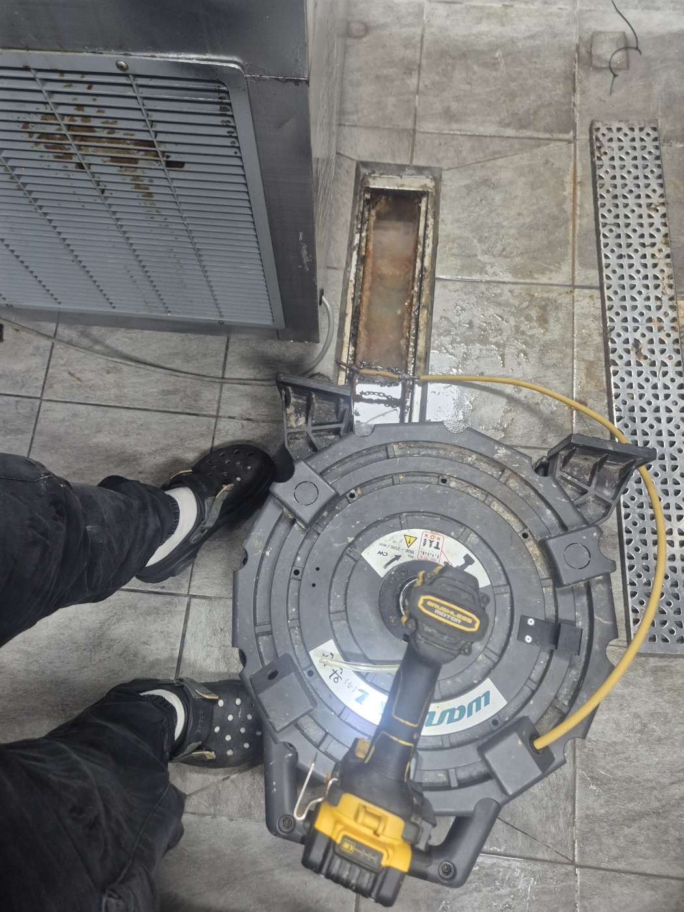
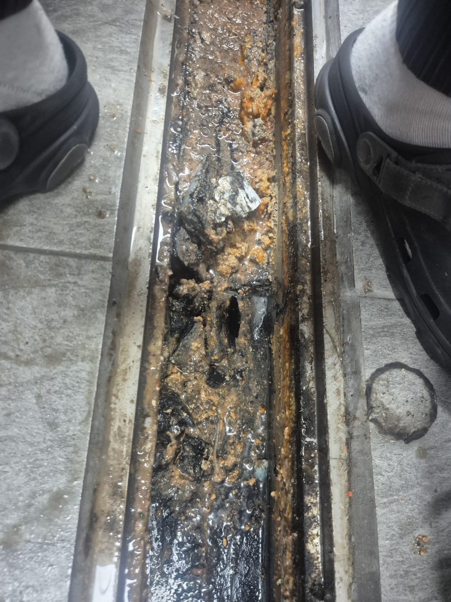
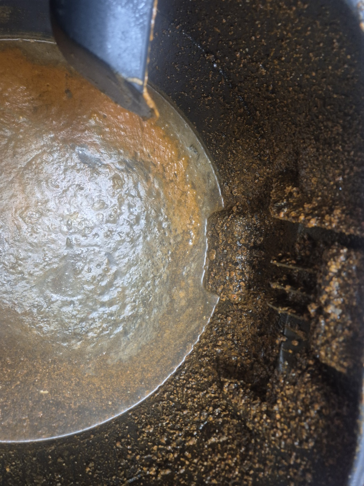
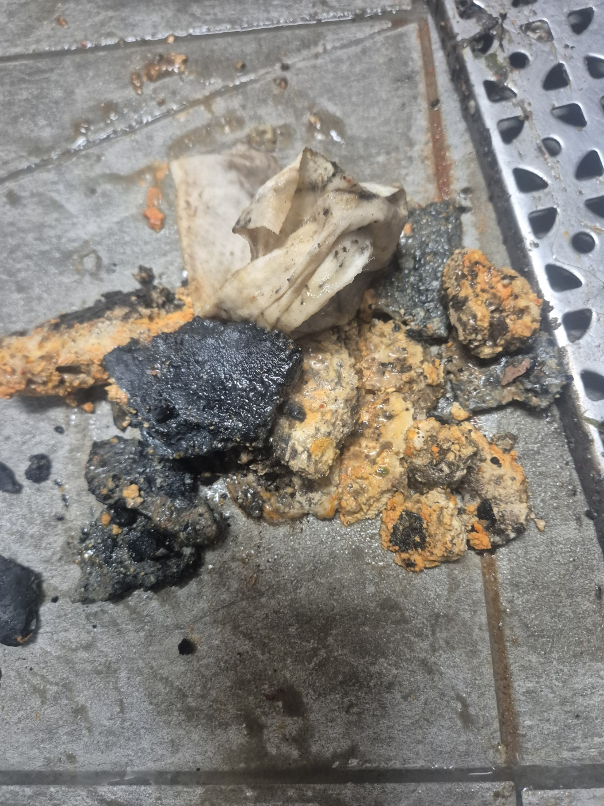
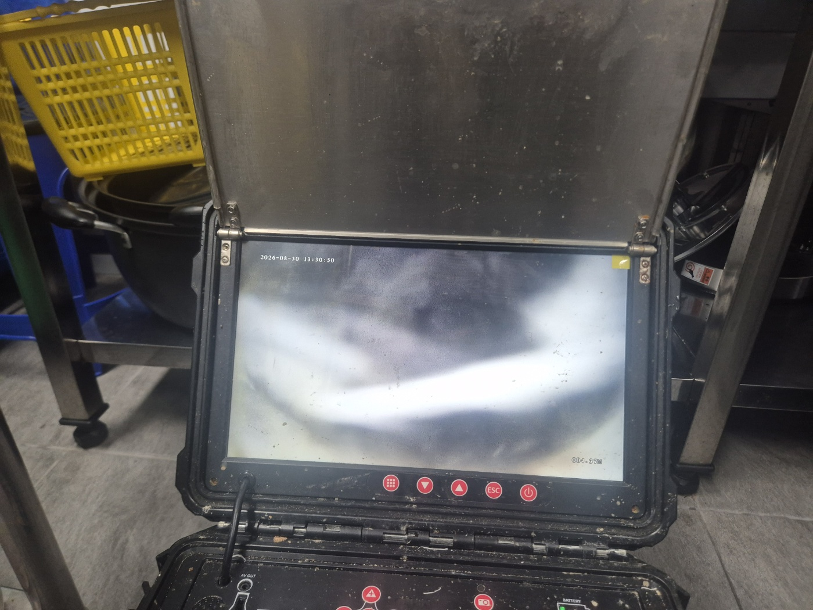
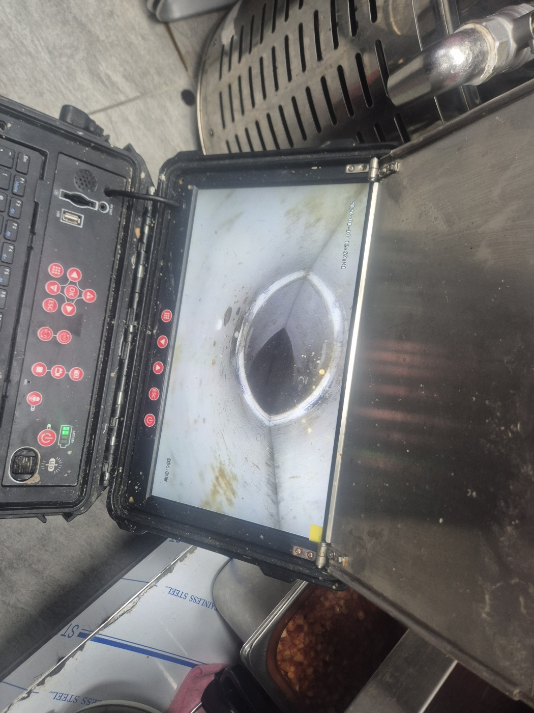

안녕하세요.. 고고고 설비입니다.. 오늘은 천안시 두정동에 있는 식당에서 하수구막힘 신고를 받고 다녀온 현장입니다. 영업 준비 시간에 물이 안 빠져서 급하게 연락 주셨어요.
주방 트렌치 배수구를 열어보니 안쪽에 기름때와 음식물 찌꺼기가 오랫동안 쌓여 굳어있는 상태였습니다. 뚜껑을 열자마자 훅 올라오는 냄새로 봐서 상당 기간 쌓였다는 걸 짐작할 수 있었어요.
정확한 막힘 위치를 찾기 위해 내시경 카메라를 배관 안쪽으로 넣어봤습니다. 화면이 뿌옇게 흐려질 정도로 이물질이 가득한 게 확인됐고, 안쪽으로 갈수록 화면이 더 어두워지는 걸 보고 막힘이 꽤 길게 이어져 있다는 걸 알 수 있었어요.

트렌치 배수구 앞에 전동 와이어 장비를 놓고 케이블을 안쪽으로 밀어 넣기 시작했습니다. 영업 전에 마쳐야 해서 서두르되 무리하지 않고 진행했어요.

트렌치 안쪽을 보니 기름때와 돌덩이 같은 이물질이 겹겹이 눌어붙어 있었습니다. 음식점 특성상 기름기가 오래 쌓인 것으로 보였어요.

셕션과 전동 와이어를 함께 사용해서 굳은 이물질을 하나씩 끄집어냈습니다.

끄집어낸 기름 덩어리와 이물질만 봐도 꽤 오랫동안 방치됐던 걸 알 수 있었습니다.

작업 중간중간 내시경으로 진행 상황을 확인하고, 마지막에 다시 한번 배관 안쪽을 살펴봤습니다. 처음 뿌옇던 화면이 점점 밝아지는 걸 보면서 작업이 제대로 되고 있다는 걸 확인할 수 있었어요.

마무리로 확인한 배관 안쪽은 처음과 다르게 훤히 뚫려있었고, 물도 막힘 없이 잘 빠지는 걸 확인했습니다. 영업 시작 전에 여유 있게 마칠 수 있어서 다행이었어요.

음식점 트렌치 배수구는 기름때가 쌓이기 쉬운 만큼, 거름망 관리와 정기적인 청소가 막힘 재발을 막는 데 도움이 됩니다. 특히 영업이 끝난 뒤 뜨거운 물로 한 번씩 헹궈주시는 것만으로도 큰 도움이 됩니다.
고고고 설비는 주택, 아파트, 원룸, 상가, 공장의 생활 하수 오수 배관을 관리해 주는 업체입니다. 고고고 설비에 전화 주시면 친절상담 정확한 진단 확실한 해결로 보답해 드리겠습니다!!